AR(1) stochastic volatility steady-state BVAR
Source:vignettes/AR1-stochastic-volatility-steady-state-BVAR.Rmd
AR1-stochastic-volatility-steady-state-BVAR.RmdHere we estimate a steady-state BVAR model with AR(1) stochastic
volatility, see ?bvar for details.
We will estimate the model on a quarterly US data set from Koop and Korobilis (2010) on the inflation rate \(\Delta \pi_t\) (the annual percentage change in a chain-weighted GDP price index), the unemployment rate \(u_t\) (seasonally adjusted civilian unemployment rate, all civilian workers aged 16 years or older) and the interest rate \(r_t\) (yield on the three-month Treasury bill rate). The sample is 1953Q1-2006Q3 and we have the data vector
\[ y_t = \begin{pmatrix} \Delta \pi_t \\ u_t \\ r_t \end{pmatrix} \]
First, let’s load the package, then import and plot the data.
library(SteadyStateBVAR)
data("KoopKorobilis2010")
yt <- KoopKorobilis2010
plot.ts(yt)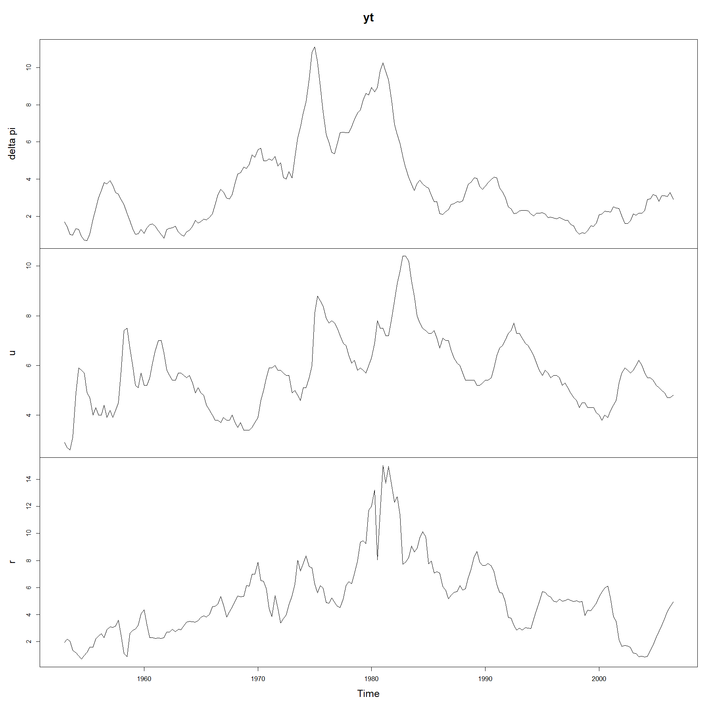
plot of chunk AR(1)-1
Let’s create the bvar object which we will use throughout here.
bvar_obj <- bvar(data = yt)We choose 2 lags and only a constant as the deterministic variable.
bvar_obj <- setup(bvar_obj,
p=2,
deterministic = "constant")We set the overall tightness to \(\lambda_1 = 0.20\), cross-equation tightness to \(\lambda_2 = 0.50\) and the lag decay rate to \(\lambda_3 = 1.00\). For the prior means on the first own lags, we set them to \(0.6\) for \(\Delta \pi_t\) and \(0.9\) for \(u_t\) and \(r_t\). Note that the prior mean on the first own lag of inflation is set to \(0.6\) instead of \(0\) to reflect some degree of persistence in the series (even though it is a growth rate variable).
lambda_1 <- 0.20
lambda_2 <- 0.50
lambda_3 <- 1.00
fol_pm=c(0.6, # delta pi
0.9, #u
0.9) #RNow, for the steady-state priors, we specify our prior beliefs with the help of 95% prior probability intervals (let us pretend that our steady-state priors are expert based). Since we only have a constant now, we have \(q=1\) and as such \(\Psi\) has only one column \(\psi_1=\Psi\). Since \(d_t = 1 \ \forall \ t\), we have \(\Psi d_t = \mu_t\) which simplifies to \(\Psi = \mu\) and as such we can directly interpret \(\Psi d_t = \mu_t = \Psi = \mu\) as the unconditional mean, i.e. the steady state.
theta_Psi <-
c(
ppi(1.90, 2.10, interval=0.95)$mean, #Psi: delta pi
ppi(3.80, 4.50, interval=0.95)$mean, #Psi: u
ppi(2.60, 3.90, interval=0.95)$mean #Psi: r
)
Omega_Psi <-
diag(
c(
ppi(1.90, 2.10, interval=0.95)$var, #Psi: delta pi
ppi(3.80, 4.50, interval=0.95)$var, #Psi: u
ppi(2.60, 3.90, interval=0.95)$var #Psi: r
)
)Now we need to specify our stochastic volatility priors. See
?priors for more information about the prior specification
(and ?bvar or
vignette("SteadyStateBVAR-intro") for details on the
model). Below I take inspiration from Carriero, Clark, and Marcellino
(2024), which uses the exact same AR(1) stochastic volatility
specification, but for a conventional BVAR.
k <- bvar_obj$setup$k
n_free_params_A <- bvar_obj$setup$n_free_params_A
sigma2 <- diag(bvar_obj$setup$Sigma_AR)
SV_priors_AR1 <- list(
theta_A = rep(0, n_free_params_A),
Omega_A = diag(10, n_free_params_A),
theta_gamma_0 = 0.1 * log(sigma2),
Omega_gamma_0 = diag(2, k),
theta_gamma_1 = rep(0.9, k),
Omega_gamma_1 = diag(0.04, k),
theta_log_lambda_1 = log(sigma2),
Omega_log_lambda_1 = diag(2, k),
V_Phi = (10 - k - 1) * 0.03 * diag(k),
m_Phi = 10
)Here sigma2 contains the residual variances from
AR(\(p\)) models (the same ones we used
in the Minnesota prior).
Let’s put everything into the priors() function. Please
note that lambda_1, lambda_2, and
lambda_3, which are the hyperparameters in the Minnesota
prior, have nothing to do with the \(\ln
\lambda\)’s (log volatilities) from the stochastic volatility
specification.
bvar_obj <- priors(bvar_obj,
lambda_1 = lambda_1,
lambda_2 = lambda_2,
lambda_3 = lambda_3,
first_own_lag_prior_mean =fol_pm,
theta_Psi = theta_Psi,
Omega_Psi = Omega_Psi,
SV = TRUE,
SV_type = "AR1",
SV_priors = SV_priors_AR1)We can plot the steady-state priors
steady_state_priors_plot(bvar_obj, interval = 0.95)-2-1.png)
plot of chunk AR(1)-2
-2-2.png)
plot of chunk AR(1)-2
-2-3.png)
plot of chunk AR(1)-2
Now, let us fit the model. Note that we can use arguments from
rstan::sampling() such as control where we can
tweak max_treedepth and adapt_delta. Let us
choose 4 markov chains, with each having 6000 iterations, and where 2000
of those 6000 are warmup/burn-in iterations.
bvar_obj <- fit(bvar_obj,
H = 40,
iter = 6000,
warmup = 2000,
chains = 4,
cores = 4,
control = list(max_treedepth = 12, adapt_delta = 0.999))
#> ------------------------------------------------------------
#> Forecast horizon:
#> 40
#>
#> Future deterministic variables (d_pred):
#> constant
#> h=1 1
#> h=2 1
#> h=3 1
#> h=4 1
#> h=5 1
#> h=6 1
#> h=7 1
#> h=8 1
#> h=9 1
#> h=10 1
#> h=11 1
#> h=12 1
#> h=13 1
#> h=14 1
#> h=15 1
#> h=16 1
#> h=17 1
#> h=18 1
#> h=19 1
#> h=20 1
#> h=21 1
#> h=22 1
#> h=23 1
#> h=24 1
#> h=25 1
#> h=26 1
#> h=27 1
#> h=28 1
#> h=29 1
#> h=30 1
#> h=31 1
#> h=32 1
#> h=33 1
#> h=34 1
#> h=35 1
#> h=36 1
#> h=37 1
#> h=38 1
#> h=39 1
#> h=40 1
#> ------------------------------------------------------------
#> Estimating Stan model:
#> steady_state_bvar_AR1_stochastic_volatility
#>
#> Also generating draws from the joint predictive distribution
#>
#> ...
#> SAMPLING FINISHEDNow lets see the elementwise posterior means
summary(bvar_obj, stat="mean", t = 215) #t = 215 for covariance matrix
#> Posterior mean estimates
#> ------------------------
#>
#>
#> beta
#> --------------------------------------------------------------------------------
#> delta pi u r
#> delta pi.l1 1.27 0.02 0.16
#> u.l1 -0.09 1.17 -0.16
#> r.l1 0.00 -0.01 1.04
#> delta pi.l2 -0.28 0.01 -0.11
#> u.l2 0.07 -0.23 0.17
#> r.l2 -0.01 0.02 -0.11
#> --------------------------------------------------------------------------------
#>
#>
#> Psi
#> --------------------------------------------------------------------------------
#> [,1]
#> delta pi 1.99
#> u 4.28
#> r 3.51
#> --------------------------------------------------------------------------------
#>
#>
#> Sigma_u,t (t = 215)
#> --------------------------------------------------------------------------------
#> delta pi u r
#> delta pi 0.07 -0.01 0.02
#> u -0.01 0.03 -0.02
#> r 0.02 -0.02 0.16
#> --------------------------------------------------------------------------------
#>
#>
#> A
#> --------------------------------------------------------------------------------
#> delta pi u r
#> delta pi 1.00 0.00 0
#> u 0.13 1.00 0
#> r -0.24 0.46 1
#> --------------------------------------------------------------------------------
#>
#>
#> gamma_0
#> --------------------------------------------------------------------------------
#> delta pi u r
#> -0.14 -0.15 -0.09
#> --------------------------------------------------------------------------------
#>
#>
#> gamma_1
#> --------------------------------------------------------------------------------
#> delta pi u r
#> 0.95 0.95 0.94
#> --------------------------------------------------------------------------------
#>
#>
#> Phi
#> --------------------------------------------------------------------------------
#> delta pi u r
#> delta pi 0.06 0.04 0.06
#> u 0.04 0.07 0.07
#> r 0.06 0.07 0.14
#> --------------------------------------------------------------------------------You can always look at the stanfit object
bvar_obj$fit$stan directly if you want. Note that the
z’s below are not parameters per se, they are simply used
in a reparameterization trick to sample the log volatilities more
efficiently.
print(bvar_obj$fit$stan)
#> Inference for Stan model: steady_state_bvar_AR1_stochastic_volatility.
#> 4 chains, each with iter=6000; warmup=2000; thin=1;
#> post-warmup draws per chain=4000, total post-warmup draws=16000.
#>
#> mean se_mean sd 2.5% 25% 50% 75% 97.5% n_eff Rhat
#> beta[1,1] 1.27 0.00 0.06 1.16 1.23 1.27 1.31 1.38 23162 1
#> beta[1,2] 0.02 0.00 0.04 -0.05 0.00 0.02 0.05 0.10 22052 1
#> beta[1,3] 0.16 0.00 0.08 0.00 0.11 0.16 0.22 0.32 22491 1
#> beta[2,1] -0.09 0.00 0.04 -0.16 -0.11 -0.09 -0.06 -0.02 22661 1
#> beta[2,2] 1.17 0.00 0.06 1.06 1.13 1.17 1.20 1.28 21389 1
#> beta[2,3] -0.16 0.00 0.08 -0.31 -0.21 -0.16 -0.10 0.00 23565 1
#> beta[3,1] 0.00 0.00 0.02 -0.03 -0.01 0.00 0.01 0.04 25236 1
#> beta[3,2] -0.01 0.00 0.02 -0.05 -0.02 -0.01 0.00 0.02 24610 1
#> beta[3,3] 1.04 0.00 0.06 0.93 1.00 1.04 1.08 1.16 21037 1
#> beta[4,1] -0.28 0.00 0.06 -0.39 -0.32 -0.28 -0.24 -0.17 22680 1
#> beta[4,2] 0.01 0.00 0.04 -0.07 -0.02 0.01 0.03 0.09 23141 1
#> beta[4,3] -0.11 0.00 0.08 -0.27 -0.16 -0.11 -0.05 0.05 22919 1
#> beta[5,1] 0.07 0.00 0.03 0.00 0.05 0.07 0.09 0.13 23168 1
#> beta[5,2] -0.23 0.00 0.05 -0.33 -0.26 -0.23 -0.19 -0.12 21328 1
#> beta[5,3] 0.17 0.00 0.07 0.02 0.12 0.17 0.22 0.32 24299 1
#> beta[6,1] -0.01 0.00 0.02 -0.04 -0.02 -0.01 0.01 0.03 27689 1
#> beta[6,2] 0.02 0.00 0.02 -0.01 0.01 0.03 0.04 0.06 24211 1
#> beta[6,3] -0.11 0.00 0.06 -0.22 -0.15 -0.11 -0.07 0.00 22078 1
#> Psi[1,1] 1.99 0.00 0.05 1.89 1.96 1.99 2.03 2.10 37254 1
#> Psi[2,1] 4.28 0.00 0.18 3.93 4.16 4.28 4.40 4.62 32984 1
#> Psi[3,1] 3.51 0.00 0.33 2.85 3.29 3.51 3.74 4.15 35406 1
#> z[1,1] 0.00 0.00 0.41 -0.74 -0.28 -0.02 0.27 0.86 25900 1
#> z[1,2] 1.25 0.00 0.43 0.44 0.95 1.24 1.53 2.14 24151 1
#> z[1,3] -1.01 0.00 0.53 -2.00 -1.37 -1.02 -0.67 0.06 24199 1
#> z[2,1] 0.00 0.01 0.97 -1.89 -0.67 0.00 0.65 1.89 37832 1
#> z[2,2] 0.24 0.01 0.98 -1.67 -0.42 0.24 0.91 2.14 37459 1
#> z[2,3] -0.08 0.01 0.97 -2.01 -0.73 -0.08 0.56 1.82 37380 1
#> z[3,1] 0.11 0.01 0.96 -1.79 -0.53 0.11 0.75 1.99 35089 1
#> z[3,2] 0.27 0.01 0.99 -1.67 -0.40 0.28 0.93 2.20 37343 1
#> z[3,3] -0.14 0.01 0.98 -2.05 -0.80 -0.13 0.52 1.78 36445 1
#> z[4,1] -0.38 0.00 0.95 -2.24 -1.01 -0.38 0.26 1.51 39659 1
#> z[4,2] -0.23 0.01 0.96 -2.11 -0.88 -0.23 0.42 1.65 34406 1
#> z[4,3] -0.25 0.01 0.98 -2.21 -0.90 -0.25 0.41 1.72 38136 1
#> z[5,1] -0.24 0.01 0.96 -2.14 -0.90 -0.24 0.41 1.62 36428 1
#> z[5,2] -0.22 0.01 0.97 -2.08 -0.89 -0.22 0.45 1.70 35126 1
#> z[5,3] -0.22 0.00 0.98 -2.16 -0.89 -0.22 0.44 1.71 39704 1
#> z[6,1] -0.16 0.01 0.97 -2.07 -0.83 -0.16 0.51 1.74 37685 1
#> z[6,2] -0.11 0.01 0.98 -2.04 -0.76 -0.10 0.54 1.83 37009 1
#> z[6,3] -0.18 0.00 0.98 -2.10 -0.84 -0.18 0.48 1.74 40385 1
#> z[7,1] 0.09 0.00 0.95 -1.77 -0.56 0.10 0.73 1.95 39717 1
#> z[7,2] 0.02 0.00 0.98 -1.90 -0.64 0.02 0.69 1.95 42186 1
#> z[7,3] -0.14 0.00 0.99 -2.09 -0.81 -0.13 0.53 1.81 40404 1
#> z[8,1] 0.27 0.00 0.94 -1.61 -0.35 0.26 0.91 2.11 39463 1
#> z[8,2] 0.05 0.00 0.97 -1.85 -0.61 0.05 0.69 1.95 39203 1
#> z[8,3] -0.08 0.00 0.98 -2.00 -0.74 -0.09 0.58 1.82 42301 1
#> z[9,1] 0.43 0.01 0.94 -1.37 -0.20 0.43 1.07 2.29 34833 1
#> z[9,2] 0.21 0.01 0.96 -1.68 -0.44 0.21 0.86 2.08 35790 1
#> z[9,3] 0.01 0.01 0.98 -1.93 -0.66 0.02 0.68 1.91 36945 1
#> z[10,1] -0.15 0.00 0.92 -1.95 -0.77 -0.15 0.47 1.63 39472 1
#> z[10,2] 0.14 0.01 0.97 -1.73 -0.52 0.14 0.80 2.00 37353 1
#> z[10,3] -0.14 0.00 0.99 -2.05 -0.81 -0.14 0.53 1.83 41593 1
#> z[11,1] -0.22 0.00 0.94 -2.03 -0.85 -0.22 0.41 1.63 40320 1
#> z[11,2] 0.10 0.00 0.96 -1.79 -0.55 0.10 0.75 1.96 41640 1
#> z[11,3] -0.21 0.00 1.00 -2.17 -0.89 -0.21 0.47 1.74 42347 1
#> z[12,1] -0.34 0.00 0.95 -2.21 -0.98 -0.34 0.30 1.55 42101 1
#> z[12,2] 0.21 0.01 0.99 -1.75 -0.45 0.22 0.87 2.12 34740 1
#> z[12,3] -0.17 0.00 0.98 -2.11 -0.83 -0.17 0.49 1.77 38779 1
#> z[13,1] -0.10 0.00 0.94 -1.96 -0.73 -0.11 0.53 1.73 39911 1
#> z[13,2] 0.37 0.01 0.96 -1.51 -0.28 0.37 1.03 2.27 36491 1
#> z[13,3] -0.09 0.00 0.98 -2.02 -0.75 -0.09 0.57 1.86 40408 1
#> z[14,1] -0.19 0.00 0.95 -2.08 -0.82 -0.20 0.44 1.68 38146 1
#> z[14,2] 0.41 0.01 0.97 -1.49 -0.25 0.41 1.08 2.30 35527 1
#> z[14,3] -0.13 0.01 0.98 -2.08 -0.78 -0.13 0.52 1.81 37814 1
#> z[15,1] -0.14 0.01 0.97 -2.04 -0.79 -0.13 0.52 1.76 37175 1
#> z[15,2] 0.36 0.00 0.96 -1.50 -0.30 0.35 1.00 2.27 40775 1
#> z[15,3] -0.08 0.01 1.00 -2.04 -0.76 -0.09 0.59 1.86 36042 1
#> z[16,1] 0.07 0.00 0.97 -1.81 -0.58 0.06 0.71 1.96 38051 1
#> z[16,2] 0.48 0.00 0.98 -1.41 -0.18 0.48 1.15 2.38 39705 1
#> z[16,3] 0.01 0.01 0.98 -1.89 -0.65 0.01 0.67 1.94 38105 1
#> z[17,1] 0.11 0.01 0.96 -1.77 -0.53 0.10 0.75 1.99 35221 1
#> z[17,2] 0.54 0.01 0.98 -1.37 -0.11 0.55 1.19 2.47 37867 1
#> z[17,3] 0.06 0.00 0.99 -1.90 -0.61 0.06 0.73 2.00 40377 1
#> z[18,1] 0.18 0.01 0.98 -1.70 -0.48 0.18 0.84 2.09 32945 1
#> z[18,2] 0.71 0.00 0.96 -1.17 0.06 0.71 1.37 2.58 39240 1
#> z[18,3] 0.14 0.01 0.97 -1.76 -0.52 0.15 0.80 2.03 36028 1
#> z[19,1] 0.36 0.01 0.96 -1.54 -0.28 0.36 0.99 2.25 30833 1
#> z[19,2] 0.83 0.01 0.97 -1.05 0.17 0.84 1.50 2.72 33821 1
#> z[19,3] 0.15 0.01 0.98 -1.76 -0.50 0.15 0.82 2.10 35356 1
#> z[20,1] 0.12 0.01 0.95 -1.75 -0.52 0.12 0.77 1.98 35632 1
#> z[20,2] 0.51 0.00 0.95 -1.37 -0.12 0.51 1.15 2.36 38252 1
#> z[20,3] 0.14 0.00 0.97 -1.76 -0.52 0.14 0.80 2.03 41579 1
#> z[21,1] -0.05 0.01 0.95 -1.94 -0.68 -0.04 0.57 1.82 35685 1
#> z[21,2] 0.09 0.00 0.97 -1.83 -0.56 0.09 0.74 1.99 38715 1
#> z[21,3] 0.18 0.01 0.98 -1.75 -0.49 0.19 0.85 2.11 36112 1
#> z[22,1] 0.15 0.01 0.95 -1.74 -0.49 0.15 0.80 2.01 35739 1
#> z[22,2] 0.27 0.01 0.98 -1.65 -0.39 0.27 0.93 2.18 37549 1
#> z[22,3] 0.29 0.01 0.95 -1.57 -0.36 0.29 0.92 2.14 35864 1
#> z[23,1] -0.24 0.01 0.96 -2.09 -0.89 -0.25 0.41 1.67 34155 1
#> z[23,2] -0.02 0.01 0.97 -1.89 -0.67 -0.02 0.65 1.90 35104 1
#> z[23,3] -0.11 0.01 0.98 -2.02 -0.79 -0.10 0.57 1.81 36135 1
#> z[24,1] -0.22 0.00 0.95 -2.08 -0.87 -0.21 0.43 1.65 37440 1
#> z[24,2] 0.09 0.00 0.98 -1.79 -0.57 0.09 0.75 2.00 39045 1
#> z[24,3] -0.04 0.00 0.98 -1.96 -0.70 -0.03 0.63 1.88 39987 1
#> z[25,1] -0.08 0.00 0.94 -1.89 -0.73 -0.09 0.55 1.73 37104 1
#> z[25,2] 0.15 0.00 0.98 -1.76 -0.53 0.16 0.82 2.06 38880 1
#> z[25,3] 0.06 0.01 0.98 -1.88 -0.60 0.06 0.71 1.99 37361 1
#> z[26,1] 0.21 0.01 0.94 -1.66 -0.42 0.21 0.84 2.04 33805 1
#> z[26,2] 0.31 0.01 0.96 -1.56 -0.35 0.31 0.97 2.20 36454 1
#> z[26,3] 0.16 0.01 0.99 -1.79 -0.50 0.15 0.82 2.10 34053 1
#> z[27,1] -0.16 0.00 0.94 -2.01 -0.79 -0.16 0.46 1.69 39972 1
#> [ reached 'max' / getOption("max.print") -- omitted 6459 rows ]
#>
#> Samples were drawn using NUTS(diag_e) at Sat Sep 12 22:34:51 2026.
#> For each parameter, n_eff is a crude measure of effective sample size,
#> and Rhat is the potential scale reduction factor on split chains (at
#> convergence, Rhat=1).Let us plot the posterior of the steady-state \(mu_t=mu\)
stanfit <- bvar_obj$fit$stan
rstan::plot(stanfit, pars=c("mu[1,1]",
"mu[1,2]",
"mu[1,3]"), plotfun="hist")
#> `stat_bin()` using `bins = 30`. Pick better value `binwidth`.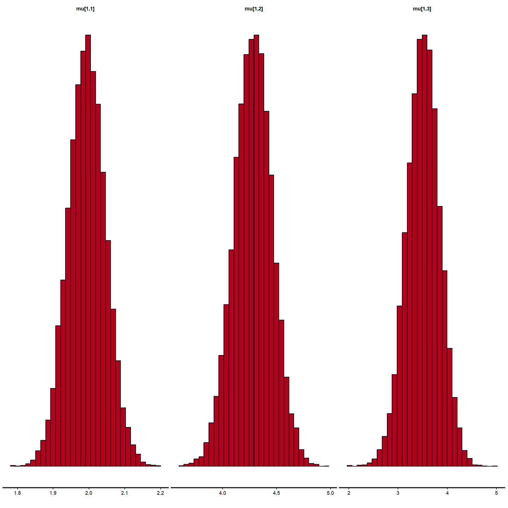
plot of chunk AR(1)-3
We can forecast
forecast(bvar_obj, pi = 0.68)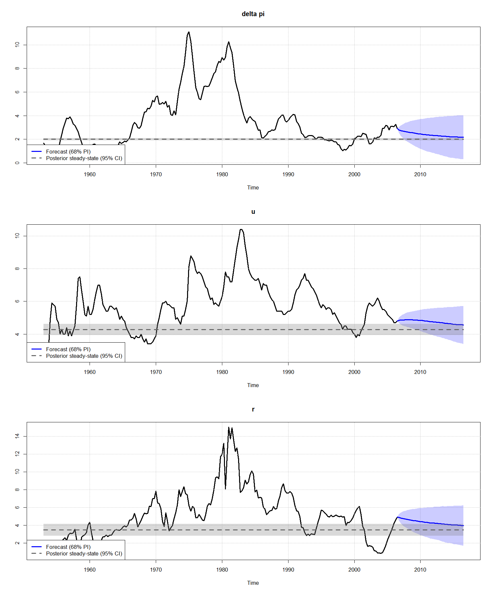
plot of chunk AR(1)-4
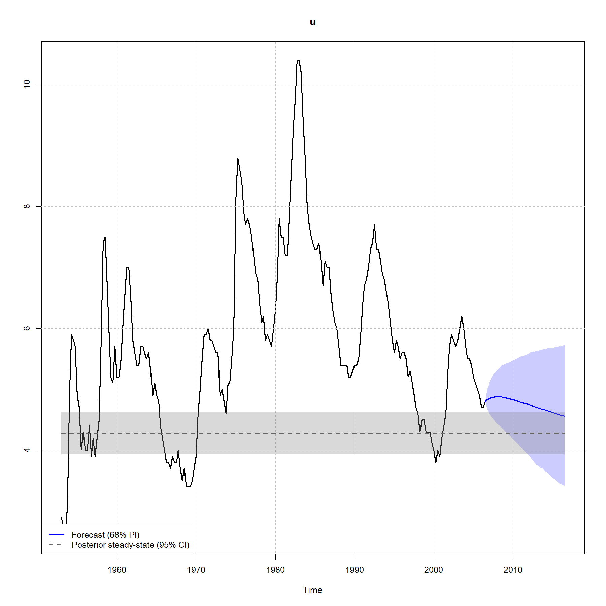
plot of chunk AR(1)-4
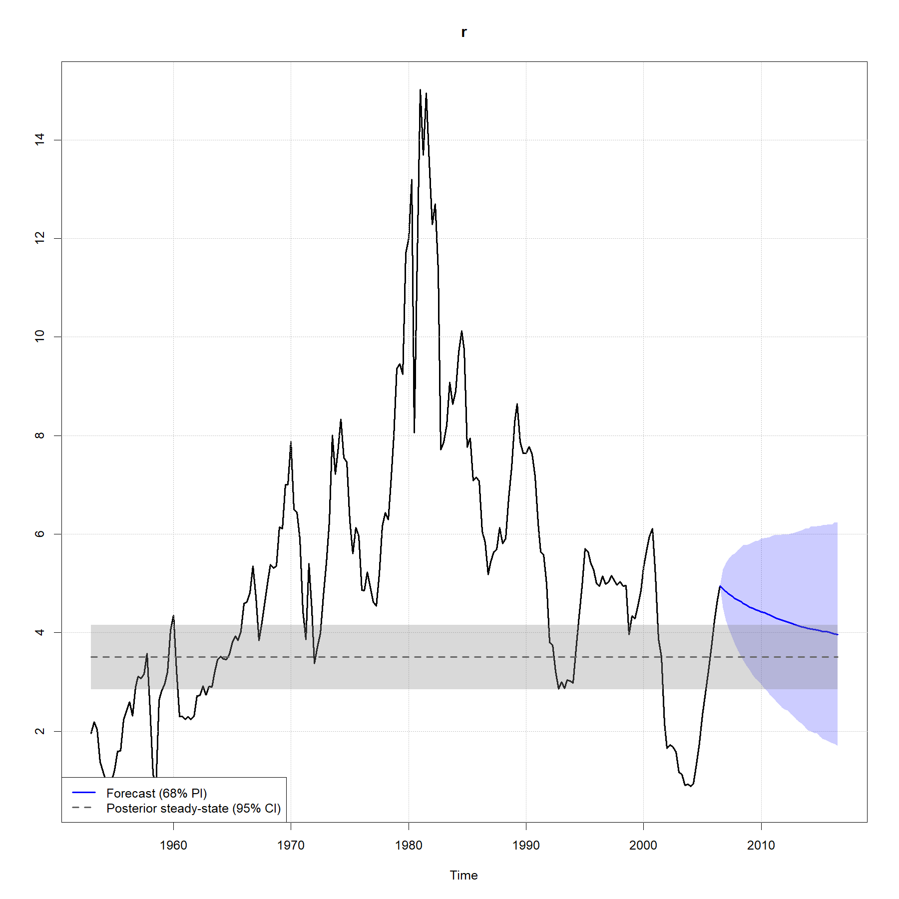
plot of chunk AR(1)-4
Let us plot the log volatility estimates and predictions
stochastic_volatility_plot(bvar_obj, ci = 0.95, vol = "log_lambda")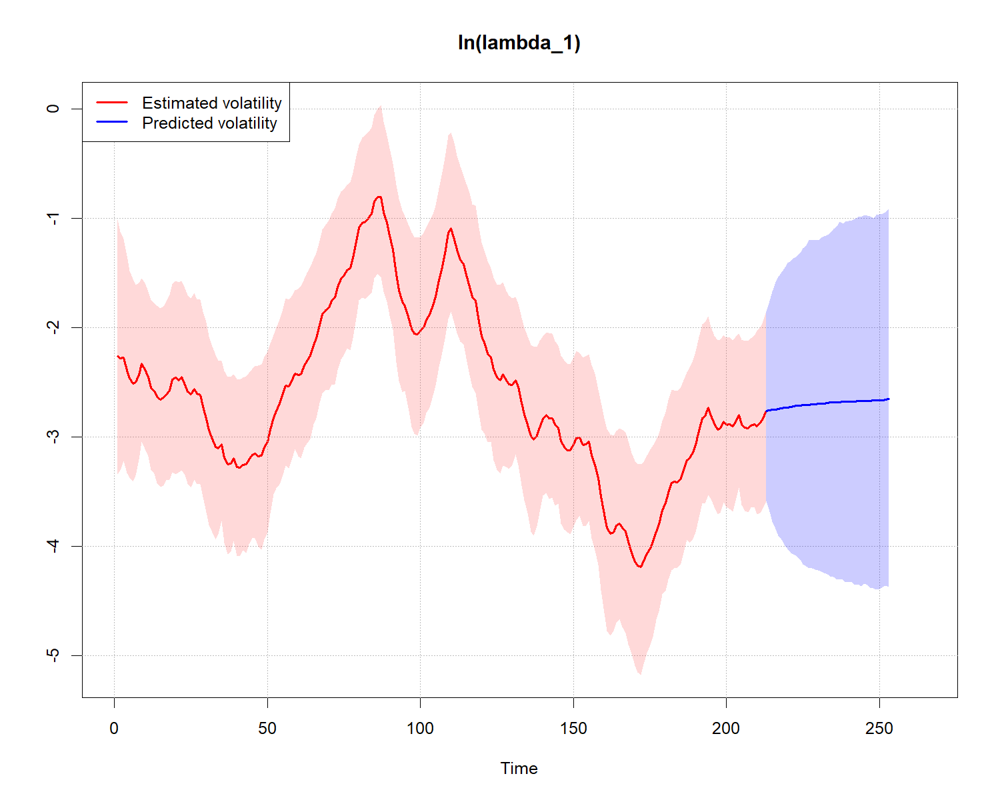
plot of chunk AR(1)-5
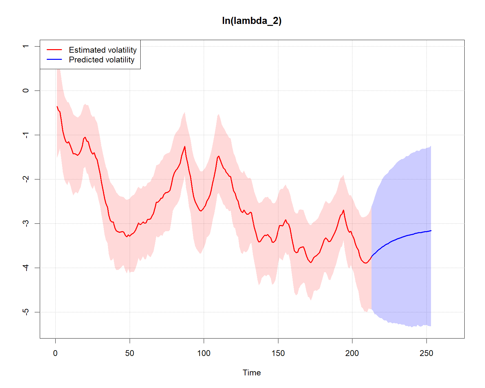
plot of chunk AR(1)-5
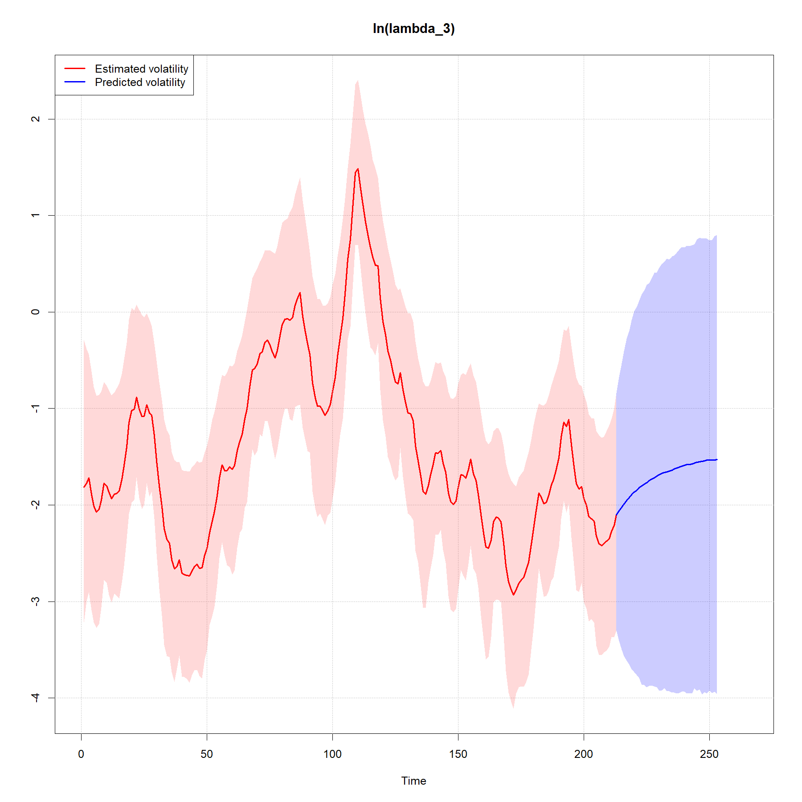
plot of chunk AR(1)-5
Let us plot the estimates and predictions of the implied innovation standard deviations
stochastic_volatility_plot(bvar_obj, vol = "sd")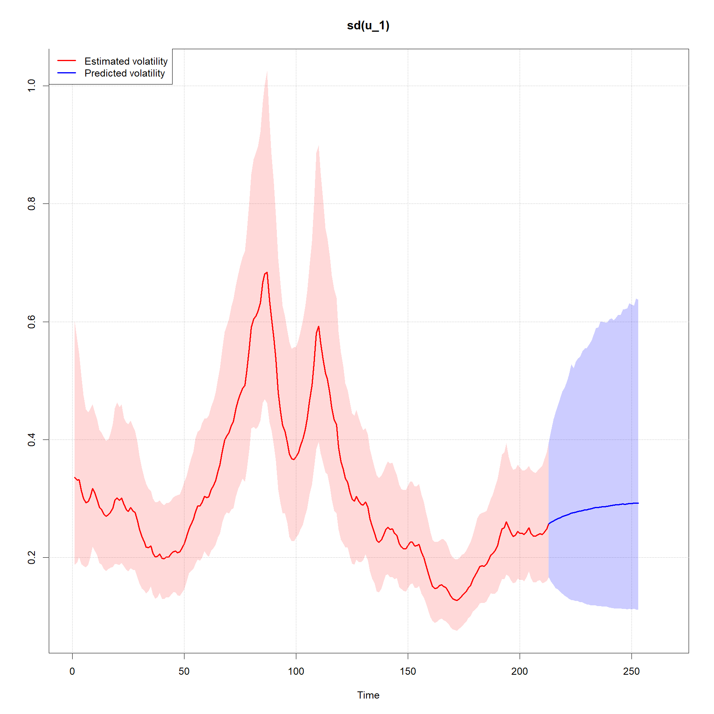
plot of chunk AR(1)-6
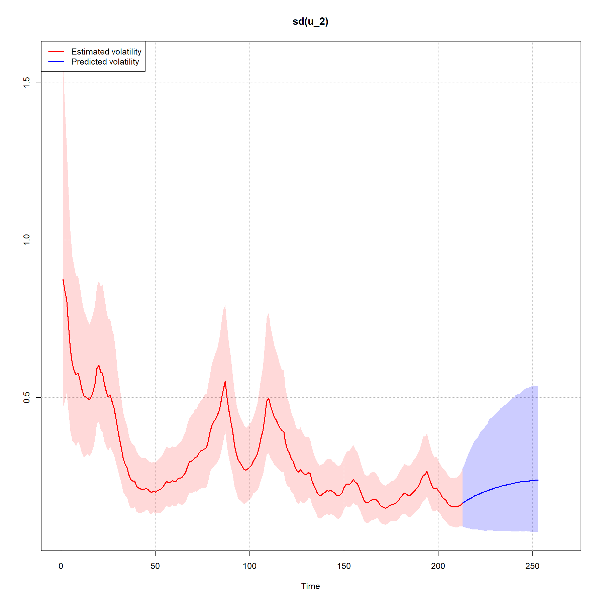
plot of chunk AR(1)-6
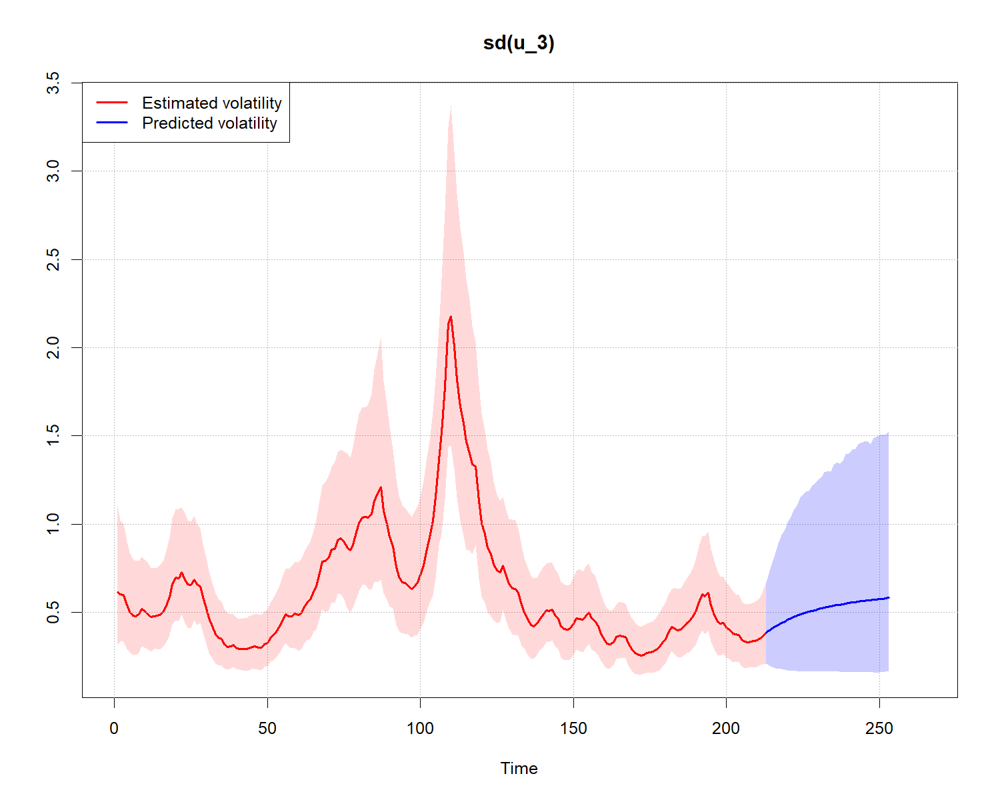
plot of chunk AR(1)-6
We can also produce orthogonalized IRFs
IRF(bvar_obj, method = "OIRF", t=215, ci=0.68) #latest t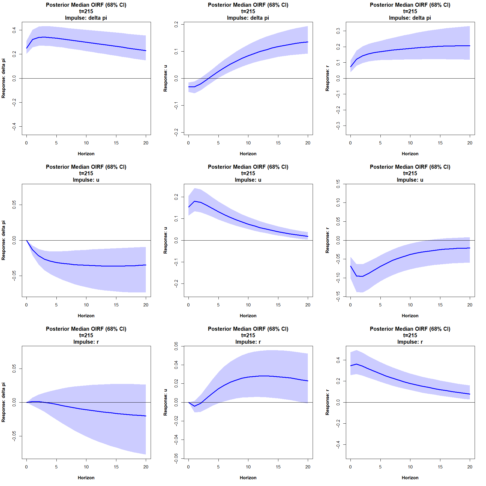
plot of chunk AR(1)-7
References
Carriero, A., Clark, T. E., and Marcellino, M. (2024). Capturing macro-economic tail risks with Bayesian vector autoregressions. Journal of Money, Credit and Banking, 56(5), pp. 1099–1127.
Koop, G. and Korobilis, D. (2010). Bayesian multivariate time series methods for empirical macroeconomics. Foundations and Trends in Econometrics, 3(4), pp. 267–358.
Villani, M. (2009). Steady-state priors for vector autoregressions. Journal of Applied Econometrics, 24(4), pp. 630–650.